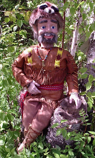

Uniformed Figure
6/9/2011
{kind=link}

From Brian BrolinI love reenacting American History, and I love attending the modern Rendezvous camp events around the country. A few years ago in Atchison, Kansas, a friend was organizing the Memorial Day parade, and was looking for people in uniform to represent soldiers throughout America's past. I participated dressed in buckskins and represented the scouts and frontier militia of the early 1800's. It is a group that isn't often thought of on Memorial Day, but was a group of individuals that is quuite representative of our independent American spirit and tenacity. When you called for figures in uniform, I thought this would be a great opportunity for "Jedediah" to make his photo debut.
Jedediah is a Brose "Fred head". He is my first attempt at building, and has side-to-side eyes, blinkers, and raising/lowering eyebrows. And his trustworthy coonskin cap, "Roadkill", also has an animated mouth and slight sideways movement. I haven't performed with a vent figure in 35 years (last show was as a 12 year old at Vacation Bible School!), so I'm working on the skills and confidence to perform for audiences again. Your blog is an inspiration and encouragement to jump back in again! Thanks!